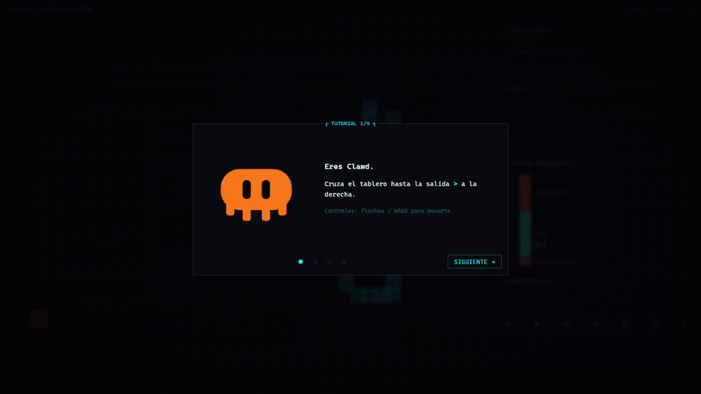
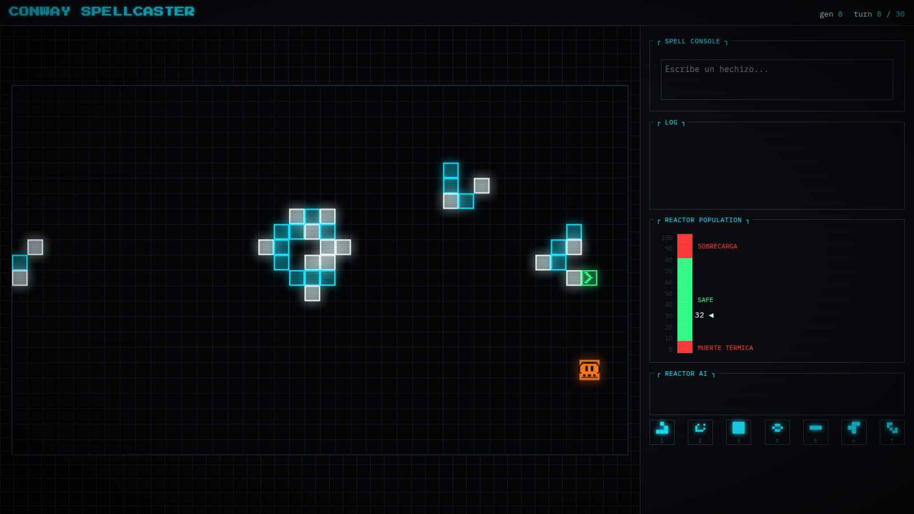
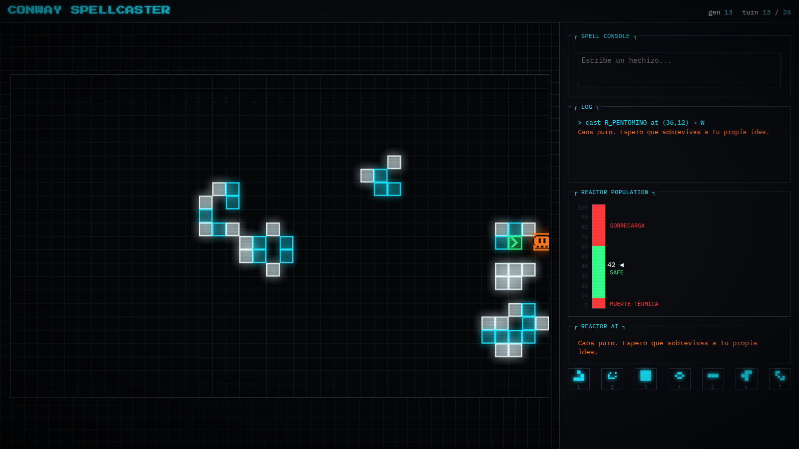

<title>Conway Spellcaster</title>
<link rel="preconnect" href="https://fonts.gstatic.com" crossorigin>
<link rel="stylesheet" href="https://fonts.googleapis.com/css2?family=Press+Start+2P&family=IBM+Plex+Mono:wght@400;500;600;700&display=swap">
<style>
  :root {
    --bg: #050608;
    --grid: #14181f;
    --panel: #0a0c10;
    --border: #2a3140;
    --cyan: #19e6ff;
    --cyan-dim: #0a6b78;
    --white: #eafcff;
    --magenta: #ff2fa0;
    --orange: #ff7a1a;
    --yellow: #ffe14d;
    --green: #35ff8a;
    --red: #ff3b3b;
    --font-pixel: 'Press Start 2P', 'Cascadia Mono', Consolas, monospace;
    --font-mono: 'IBM Plex Mono', 'Cascadia Mono', Consolas, monospace;
  }

  * { box-sizing: border-box; }

  body {
    background:
      radial-gradient(ellipse at 50% 0%, #0a1620 0%, var(--bg) 55%),
      linear-gradient(var(--bg), var(--bg));
    background-attachment: fixed;
    color: var(--white);
    font-family: var(--font-mono);
    padding-inline: 20px;
    padding-block: 28px;
    position: relative;
    overflow-x: hidden;
  }

  body::before {
    /* CRT scanlines, same trick as css/theme.css */
    content: '';
    position: fixed;
    inset: 0;
    pointer-events: none;
    z-index: 50;
    background: repeating-linear-gradient(
      to bottom,
      rgba(255, 255, 255, 0.05) 0px,
      rgba(255, 255, 255, 0.05) 1px,
      transparent 1px,
      transparent 3px
    );
    mix-blend-mode: overlay;
    opacity: 0.55;
  }

  body::after {
    content: '';
    position: fixed;
    inset: 0;
    pointer-events: none;
    z-index: 51;
    background: radial-gradient(ellipse at center, transparent 55%, rgba(0, 0, 0, 0.55) 100%);
  }

  main {
    max-width: 900px;
    margin: 0 auto;
    display: flex;
    flex-direction: column;
    gap: 56px;
  }

  a { color: var(--cyan); }

  /* ---- terminal box: <section class="box" data-title="TITULO"> ---- */
  .box {
    position: relative;
    background: var(--panel);
    border: 1px solid var(--border);
    padding: 1.8em 1.3em 1.3em;
  }
  .box[data-title]::before {
    content: "┌ " attr(data-title) " ┐";
    position: absolute;
    top: -0.75em;
    left: 0.9em;
    max-width: calc(100% - 1.6em);
    padding: 0 0.4em;
    background: var(--panel);
    color: var(--cyan);
    font-size: 0.78em;
    letter-spacing: 0.06em;
    white-space: nowrap;
    overflow: hidden;
    text-overflow: ellipsis;
  }

  /* ---- hero ---- */
  .hero {
    display: flex;
    flex-direction: column;
    align-items: center;
    gap: 18px;
    text-align: center;
    padding-top: 8px;
  }
  .eyebrow {
    font-size: 0.72rem;
    letter-spacing: 0.22em;
    color: var(--cyan-dim);
  }
  .wordmark {
    font-family: var(--font-pixel);
    font-size: clamp(1.3rem, 5.6vw, 2.5rem);
    line-height: 1.7;
    color: var(--cyan);
    text-shadow: 0 0 6px rgba(25, 230, 255, 0.55), 0 0 22px rgba(25, 230, 255, 0.25);
    text-wrap: balance;
  }
  .tagline {
    max-width: 62ch;
    color: var(--white);
    opacity: 0.86;
    font-size: 0.98rem;
    line-height: 1.6;
  }
  .tagline b { color: var(--orange); font-weight: 600; }

  .monitor {
    width: 100%;
    margin-top: 8px;
  }
  .monitor img {
    display: block;
    width: 100%;
    max-width: 100%;
    height: auto;
    border: 1px solid var(--cyan-dim);
    box-shadow: 0 0 0 1px #000, 0 0 40px rgba(25, 230, 255, 0.12);
  }
  .monitor-caption {
    margin-top: 14px;
    font-size: 0.82rem;
    color: var(--white);
    opacity: 0.75;
  }
  .monitor-caption .ok {
    color: var(--green);
    text-shadow: 0 0 8px rgba(53, 255, 138, 0.5);
    opacity: 1;
  }

  /* ---- spec strip ---- */
  .specs {
    display: grid;
    grid-template-columns: repeat(auto-fit, minmax(170px, 1fr));
    gap: 1px;
    background: var(--border);
    border: 1px solid var(--border);
  }
  .spec {
    background: var(--panel);
    padding: 14px 16px;
    display: flex;
    flex-direction: column;
    gap: 6px;
  }
  .spec-label {
    font-size: 0.68rem;
    letter-spacing: 0.14em;
    color: var(--cyan-dim);
  }
  .spec-value {
    font-size: 0.86rem;
    color: var(--white);
    font-variant-numeric: tabular-nums;
  }

  /* ---- grimoire ---- */
  .section-lede {
    font-size: 0.86rem;
    color: var(--white);
    opacity: 0.72;
    margin: 0 0 18px;
    max-width: 60ch;
  }
  .grimoire-grid {
    display: grid;
    grid-template-columns: repeat(auto-fill, minmax(148px, 1fr));
    gap: 12px;
  }
  .spell {
    border: 1px solid var(--border);
    background: var(--grid);
    padding: 14px 12px;
    display: flex;
    flex-direction: column;
    gap: 8px;
    transition: border-color 0.15s ease;
  }
  .spell:hover { border-color: var(--cyan-dim); }
  .spell-top {
    display: flex;
    align-items: baseline;
    justify-content: space-between;
  }
  .spell-glyph {
    font-size: 1.5rem;
    color: var(--cyan);
    text-shadow: 0 0 6px rgba(25, 230, 255, 0.5);
  }
  .spell-key {
    font-size: 0.68rem;
    color: var(--bg);
    background: var(--cyan-dim);
    border-radius: 2px;
    padding: 1px 6px;
  }
  .spell-name {
    font-size: 0.82rem;
    font-weight: 600;
    color: var(--white);
  }
  .spell-desc {
    font-size: 0.74rem;
    color: var(--white);
    opacity: 0.6;
    line-height: 1.35;
  }

  /* ---- gallery ---- */
  .gallery {
    display: grid;
    grid-template-columns: repeat(auto-fit, minmax(260px, 1fr));
    gap: 20px;
  }
  .shot { padding-top: 1.9em; }
  .shot img {
    display: block;
    width: 100%;
    height: auto;
    border: 1px solid var(--border);
  }
  .shot figcaption {
    margin-top: 12px;
    font-size: 0.78rem;
    color: var(--white);
    opacity: 0.75;
    line-height: 1.5;
  }
  .shot figcaption .tag {
    color: var(--orange);
    opacity: 1;
  }

  /* ---- score card (mirrors js/score.js showScore) ---- */
  .score-card { text-align: center; padding-top: 2.2em; }
  .rank {
    width: 64px;
    height: 64px;
    margin: 4px auto 18px;
    border-radius: 50%;
    border: 2px solid var(--green);
    display: flex;
    align-items: center;
    justify-content: center;
    font-family: var(--font-pixel);
    font-size: 1.4rem;
    color: var(--green);
    box-shadow: 0 0 18px rgba(53, 255, 138, 0.35);
  }
  .breakdown {
    list-style: none;
    margin: 0 auto;
    padding: 0;
    max-width: 380px;
    display: flex;
    flex-direction: column;
    gap: 8px;
    font-size: 0.84rem;
  }
  .breakdown li {
    display: flex;
    justify-content: space-between;
    gap: 12px;
    border-bottom: 1px dotted var(--border);
    padding-bottom: 6px;
    color: var(--white);
    opacity: 0.85;
  }
  .breakdown li span:last-child { font-variant-numeric: tabular-nums; }
  .total {
    max-width: 380px;
    margin: 18px auto 8px;
    padding-top: 14px;
    border-top: 1px solid var(--border);
    display: flex;
    justify-content: space-between;
    font-family: var(--font-pixel);
    font-size: 1.1rem;
    color: var(--cyan);
    text-shadow: 0 0 10px rgba(25, 230, 255, 0.5);
  }
  .score-meta {
    font-size: 0.74rem;
    color: var(--white);
    opacity: 0.5;
    margin-top: 10px;
  }

  /* ---- footer / controls ---- */
  footer.box { padding-top: 2em; }
  .controls-table {
    width: 100%;
    border-collapse: collapse;
    font-size: 0.82rem;
  }
  .controls-table td {
    padding: 7px 10px 7px 0;
    border-bottom: 1px dotted var(--border);
    color: var(--white);
    opacity: 0.85;
  }
  .controls-table td:first-child {
    color: var(--cyan);
    opacity: 1;
    white-space: nowrap;
    width: 1%;
  }
  .credit {
    display: flex;
    align-items: center;
    gap: 10px;
    margin-top: 20px;
    padding-top: 16px;
    border-top: 1px solid var(--border);
    font-size: 0.78rem;
    color: var(--white);
    opacity: 0.6;
    line-height: 1.5;
  }
  .credit svg { flex: none; width: 28px; height: 28px; }

  @media (prefers-reduced-motion: no-preference) {
    .cursor { animation: blink 1s step-end infinite; }
  }
  @keyframes blink { 0%, 49% { opacity: 1; } 50%, 100% { opacity: 0; } }

  @media (max-width: 640px) {
    .wordmark { line-height: 1.5; }
    main { gap: 40px; }
  }
</style>

<main>

  <header class="hero">
    <div class="eyebrow">ROGUELIKE DE UN SOLO NIVEL · JUEGO DE LA VIDA DE CONWAY</div>
    <h1 class="wordmark">CONWAY<br>SPELLCASTER</h1>
    <p class="tagline">
      Cruzas un tablero 40×24 desde la esquina inferior izquierda hasta la salida.
      Los obstáculos son colonias vivas que siguen las reglas de nacimiento y muerte de siempre.
      No colocas patrones a mano: le <b>escribes a la IA en español</b> lo que quieres —
      "lanza un proyectil", "protégeme por arriba" — y Claude traduce eso a un patrón real
      del grimorio, con posición y dirección.
    </p>

    <div class="monitor box" data-title="DEMO EN VIVO">
      
      <p class="monitor-caption">
        Corrida real, sin cortes ni recortes — grabada con Playwright contra <code>window.__game</code> —
        turno 15 de 24 · 1 hechizo lanzado · <span class="ok">REACTOR ESTABILIZADO</span>
      </p>
    </div>
  </header>

  <section class="specs" aria-label="Ficha técnica">
    <div class="spec">
      <span class="spec-label">TABLERO</span>
      <span class="spec-value">40 × 24 celdas, envoltura toroidal</span>
    </div>
    <div class="spec">
      <span class="spec-label">MOTOR</span>
      <span class="spec-value">Conway B3/S23 · un paso por turno</span>
    </div>
    <div class="spec">
      <span class="spec-label">TRADUCTOR</span>
      <span class="spec-value">Claude Haiku 4.5 · tool_choice forzado</span>
    </div>
    <div class="spec">
      <span class="spec-label">SIN RED</span>
      <span class="spec-value">fallback de teclado 1–7 · timeout 4s</span>
    </div>
  </section>

  <section class="grimoire" aria-label="Grimorio">
    <p class="section-lede">
      Siete patrones reales de Conway, cada uno con su propia física. La IA elige el hechizo
      leyendo el verbo de tu frase — "dispara" es un proyectil, "bloquea" es un muro, "estalla"
      es caos — o lo lanzas tú directo con las teclas 1–7 si la API no responde.
    </p>
    <div class="grimoire-grid">
      <div class="spell">
        <div class="spell-top"><span class="spell-glyph">◢</span><span class="spell-key">1</span></div>
        <div class="spell-name">Glider</div>
        <div class="spell-desc">Proyectil diagonal</div>
      </div>
      <div class="spell">
        <div class="spell-top"><span class="spell-glyph">➤</span><span class="spell-key">2</span></div>
        <div class="spell-name">LWSS</div>
        <div class="spell-desc">Nave recta, rompe muros</div>
      </div>
      <div class="spell">
        <div class="spell-top"><span class="spell-glyph">■</span><span class="spell-key">3</span></div>
        <div class="spell-name">Block</div>
        <div class="spell-desc">Muro</div>
      </div>
      <div class="spell">
        <div class="spell-top"><span class="spell-glyph">⬢</span><span class="spell-key">4</span></div>
        <div class="spell-name">Beehive</div>
        <div class="spell-desc">Muro resistente</div>
      </div>
      <div class="spell">
        <div class="spell-top"><span class="spell-glyph">┃</span><span class="spell-key">5</span></div>
        <div class="spell-name">Blinker</div>
        <div class="spell-desc">Faro</div>
      </div>
      <div class="spell">
        <div class="spell-top"><span class="spell-glyph">✸</span><span class="spell-key">6</span></div>
        <div class="spell-name">R-pentomino</div>
        <div class="spell-desc">Bomba de caos</div>
      </div>
      <div class="spell">
        <div class="spell-top"><span class="spell-glyph">◘</span><span class="spell-key">7</span></div>
        <div class="spell-name">Eater</div>
        <div class="spell-desc">Devora proyectiles</div>
      </div>
    </div>
  </section>

  <section class="gallery" aria-label="Capturas del juego real">
    <figure class="shot box" data-title="TURNO 8">
      
      <figcaption>
        Cruce tranquilo — <span class="tag">población 32</span>, dentro de rango.
        Las colonias iniciales (un r-pentomino y un glider) todavía evolucionan solas.
      </figcaption>
    </figure>
    <figure class="shot box" data-title="TURNO 16">
      
      <figcaption>
        Tras castear <span class="tag">R-pentomino</span> — el reactor sube a
        <span class="tag">56</span> y el log confirma el comentario de la IA en vivo.
      </figcaption>
    </figure>
  </section>

  <section class="score-card box" data-title="REACTOR ESTABILIZADO">
    <div class="rank">B</div>
    <ul class="breakdown">
      <li><span>Base</span><span>1000</span></li>
      <li><span>Turnos sobrantes 9 × 25</span><span>225</span></li>
      <li><span>Hechizos 1 × 150</span><span>150</span></li>
      <li><span>Reactor estable</span><span>300</span></li>
    </ul>
    <div class="total"><span>TOTAL</span><span>1675</span></div>
    <p class="score-meta">gen 15 · turn 15 / 24 — la salida estaba sellada por un "tub" de 4 celdas; se rompió con el hechizo de arriba</p>
  </section>

  <footer class="controls box" data-title="CONTROLES">
    <table class="controls-table">
      <tr><td>flechas / WASD</td><td>mover a Clawd</td></tr>
      <tr><td>Enter</td><td>enfocar la consola de hechizos</td></tr>
      <tr><td>1 – 7</td><td>hechizo por teclado (sin red)</td></tr>
      <tr><td>R</td><td>reiniciar</td></tr>
      <tr><td>M</td><td>silenciar</td></tr>
      <tr><td>F</td><td>contador de FPS</td></tr>
    </table>
    <p class="credit">
      <svg viewBox="0 0 32 32" xmlns="http://www.w3.org/2000/svg" aria-hidden="true">
        <rect x="5" y="20" width="3" height="5" rx="1" fill="#ff7a1a"/>
        <rect x="11" y="21" width="3" height="6" rx="1" fill="#ff7a1a"/>
        <rect x="18" y="21" width="3" height="6" rx="1" fill="#ff7a1a"/>
        <rect x="24" y="20" width="3" height="5" rx="1" fill="#ff7a1a"/>
        <rect x="3" y="8" width="26" height="15" rx="7" fill="#ff7a1a"/>
        <rect x="11" y="12" width="3" height="7" rx="1.5" fill="#050608"/>
        <rect x="18" y="12" width="3" height="7" rx="1.5" fill="#050608"/>
      </svg>
      Clawd, la mascota de Claude, cruzando su propio tablero. Vanilla JS, ES modules,
      cero build, cero npm — se abre con <code>python -m http.server 8080</code>.
      <span class="cursor">▌</span>
    </p>
  </footer>

</main>
